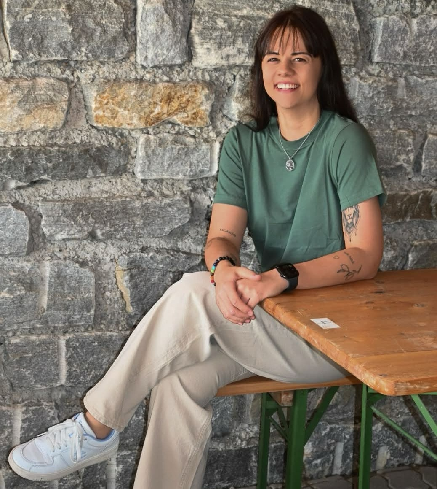

“Das merkwürdige Paradoxon ist, dass ich mich erst dann verändern kann, wenn ich mich selbst akzeptiere, wie ich bin.”
— Carl Rogers

Psychotherapie für alle ab 16 Jahren
Psychotherapeutin in Ausbildung unter Supervision
— Carl Rogers
Körper und Seele stehen in einem engen Dialog – was uns innerlich bewegt, kann sich auch körperlich zeigen. Gemeinsam schauen wir achtsam auf diese Zusammenhänge, um ein besseres Verständnis und Entlastung zu ermöglichen.
Körperliche Erkrankungen können das seelische Gleichgewicht erheblich beeinflussen. In einem geschützten Rahmen unterstütze ich Sie dabei, einen hilfreichen Umgang mit diesen Belastungen zu entwickeln und Ihre innere Stabilität zu stärken.
Eine Krebserkrankung bringt oft viele emotionale Herausforderungen mit sich. Ich begleite Sie dabei, Ängste und Unsicherheiten zu bewältigen, innere Fähigkeiten zu stärken und neue Lebensperspektiven zu entwickeln.
Persönliches Wachstum beginnt mit Selbstwahrnehmung und Akzeptanz. Ich unterstütze Sie dabei, Ihre Ressourcen zu entdecken und Ihren eigenen Weg klarer und selbstbestimmter zu gestalten.
Eine intensive Wahrnehmung kann sowohl bereichernd als auch herausfordernd sein. Gemeinsam entwickeln wir Strategien, um Ihre Sensibilität als Stärke zu nutzen.
Ängste können sich überwältigend anfühlen und den Alltag einschränken. In einem geschützten Rahmen unterstütze ich Sie dabei, die Hintergründe Ihrer Ängste besser zu verstehen, individuelle Auslöser zu erkennen und einen hilfreichen Umgang damit zu entwickeln.
Erfahrungen von Ausgrenzung oder Verletzung hinterlassen oft tiefe Spuren. Ich begleite Sie dabei, diese Erlebnisse aufzuarbeiten und neue innere Sicherheit zu entwickeln. Ziel ist es, Ihr Selbstwertgefühl nachhaltig zu stärken und wieder mehr Vertrauen in sich selbst und ihre eigenen Grenzen zu gewinnen.
Jede Identität verdient Respekt, Raum und Verständnis. Ich biete eine wertschätzende und sichere Begleitung, in der Sie sich mit all Ihren Facetten zeigen dürfen. Dabei unterstütze ich Sie bei Fragen rund um Identität, Selbstfindung und Zugehörigkeit sowie im Umgang mit möglichen Belastungen und Diskriminierungserfahrungen.